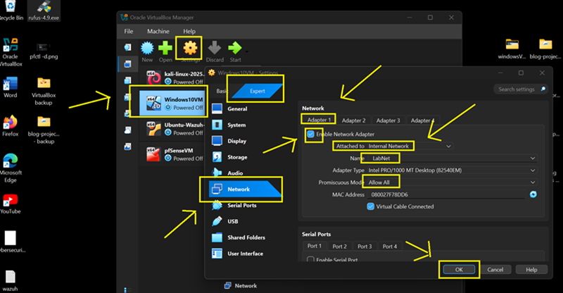
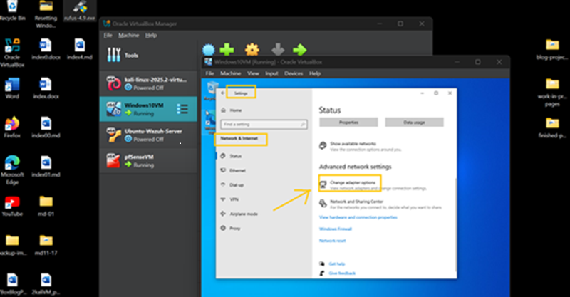
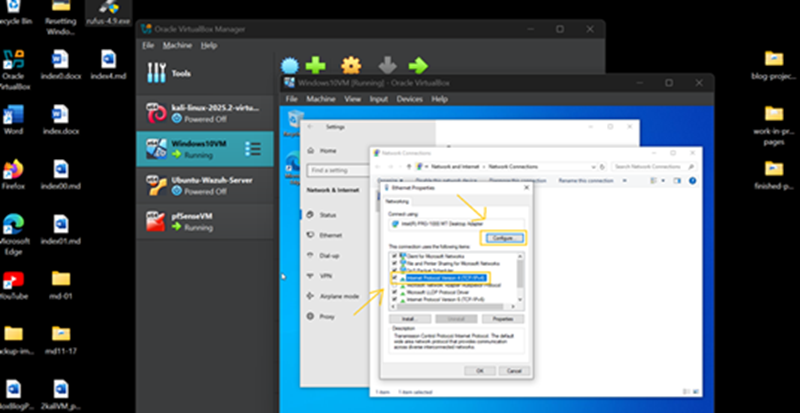
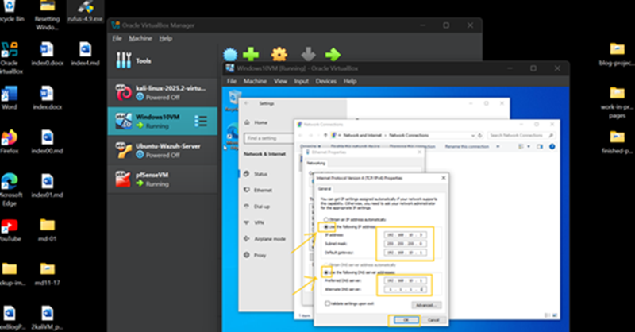
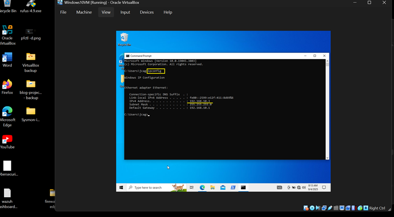
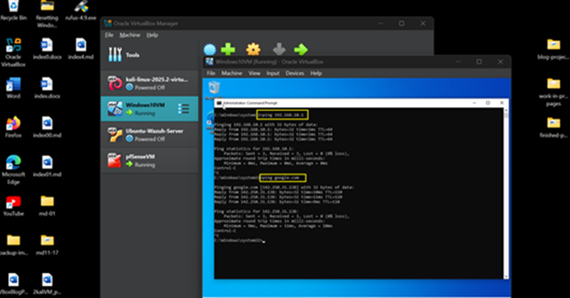
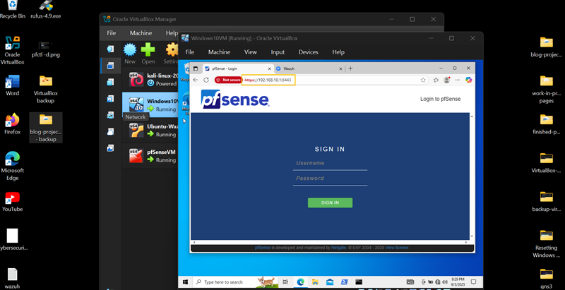

Overview
Windows 10 is configured as a SOC endpoint with a static IP address on the LabNet internal network. This ensures consistent connectivity with pfSense, Kali Linux, and Wazuh SIEM for monitoring and analysis.
Step 1 — VirtualBox Adapter Configuration
Internal Network (LabNet)
- Enable Adapter
- Attached to: Internal Network
- Name: LabNet
- Promiscuous Mode: Allow All

Step 2 — Configure Static IP (GUI Method)
- Boot Windows 10 VM
- Open Control Panel → Network and Sharing Center
- Click Change adapter settings

- Right-click Ethernet → Properties
- Select IPv4 → Properties
Static IP Configuration
- IP Address: 192.168.10.3
- Subnet Mask: 255.255.255.0
- Gateway: 192.168.10.1
DNS Configuration
- Preferred DNS: 192.168.10.1
- Alternate DNS: 1.1.1.1

Step 3 — Verify Configuration
Run:
ipconfigConfirm assigned IP: 192.168.10.3

Step 4 — Connectivity Test
ping 192.168.10.1
ping google.comFirst verifies pfSense connectivity, second verifies external internet access.

Step 5 — Access Lab Services
- pfSense: https://192.168.10.1:8443
- Wazuh Dashboard: https://192.168.10.4:443


Configuration Complete
Windows 10 is now fully integrated into the SOC LabNet network with static IP configuration, enabling stable communication with all core infrastructure components. The Virtual SOC environment is now fully integrated and should be fully functional.. now, testing begins!